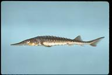
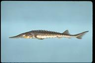

Shortnose Sturgeon
 (Photos on left from Robert Michelson, right from Noel Burkhead )
(Photos on left from Robert Michelson, right from Noel Burkhead )Description
The Shortnose sturgeon has a blunt v-shaped nose and whiskers attached to the face. Along its body it has bony plates called scutes. It grows to a maximum length of one meter. The top of this fish can be dark brown or black, with the lower sides being dark brown or yellow, and having a white underbelly (NatureServe).
Habitat and Location
Throughout the U.S. this fish can be found in the states of Georgia, North Carolina, Pennsylvania, and South Carolina. The Shortnose sturgeon can be found in the following NC counties; Anson, Bertie, Bladen, Brunswick, Camden, Carteret, Columbus, Currituck, Dare, Hyde, New Hanover, Onslow, Pamlico, Pasquotank, Pender, and Richmond counties (Service).
You are most likely to find this fish in an estuaries but they also live in rivers and the ocean. When living in the sea they don't normally go farther away from land than a few miles. Adults have summer and winter habitats, they prefer deeper waters during the winter months (NatureServe).
Reasons For Endangerment
The main reason this fish was put on the endangered species list is because of dams. Creating dams blocks the river preventing and fish from going upstream. Essentially the Shortnose sturgeon was blocked from their spawning grounds. Dams also change the flow of the water and temperature. They also face threats of habitat loss, water pollution, dredging, and from being overharvested (NatureServe).References
"Results Detailed Report." Results Detailed Report. NatureServe, n.d. Web. 28 Oct. 2016.
Service, U.S. Fish and Wildlife. "Species Profile for Shortnose sturgeon (Acipenser brevirostrum)." Species Profile for Shortnose sturgeon (Acipenser brevirostrum). U.S. Fish & Wildlife Service, n.d. Web. 27 Oct. 2016.